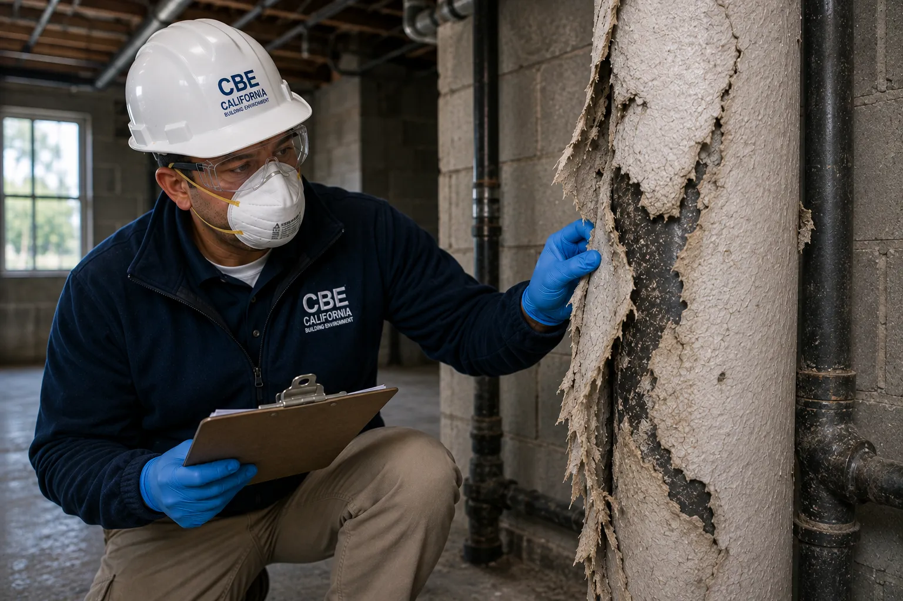
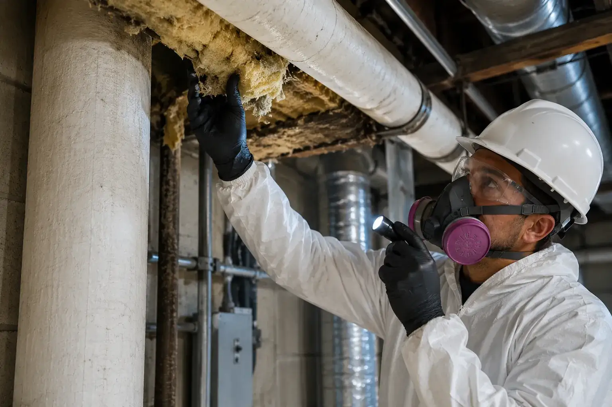

Professional Asbestos Inspection & Sample Collection Services
California Building Environment provides independent asbestos inspections, asbestos sampling, demolition and renovation inspections, asbestos consulting, and professional environmental sample collection throughout Southern California.
Collected samples are submitted to NVLAP-accredited laboratories for polarized light microscopy (PLM) analysis per EPA 600/R-93/116, with transmission electron microscopy (TEM) available for clearance and non-friable materials.
Independent Asbestos Inspections for Residential, Commercial & Industrial Properties
Our asbestos inspections are designed to identify suspect asbestos-containing materials before renovation, demolition, remodeling, maintenance activities, or property transactions. We perform detailed visual inspections and collect representative bulk samples when appropriate, following AHERA sampling protocols.
Collected bulk samples are submitted to NVLAP-accredited laboratories for PLM analysis (EPA 600/R-93/116). TEM analysis is available for vermiculite, non-friable organically bound materials, and clearance samples. Laboratory findings are incorporated into a detailed inspection report with material locations, condition assessments, estimated quantities, and regulatory classifications to support NESHAP, Cal/OSHA, and AHERA compliance.

Common Reasons for Asbestos Inspections
Asbestos inspections are required before renovation or demolition of regulated structures (NESHAP), prior to property transactions involving pre-1980 buildings, for AHERA compliance in schools, and whenever suspect materials will be disturbed during maintenance or construction.
Pre-Renovation / NESHAP
Federal NESHAP and Cal/OSHA regulations require a thorough asbestos survey before any renovation or demolition of commercial, institutional, or multi-unit residential buildings to identify regulated asbestos-containing materials.
Pre-Demolition
Complete building demolition requires a comprehensive asbestos survey with material quantities and classifications to support notification, abatement planning, and waste disposal compliance.
AHERA School Inspections
K-12 schools must maintain an AHERA management plan with triennial re-inspections, six-month periodic surveillance, and accredited inspector certifications for all asbestos-related activities.
Residential & Property Transactions
Pre-1980 homes commonly contain asbestos in floor tile, popcorn ceilings, pipe insulation, drywall joint compound, and roofing. Buyers and sellers request inspections for due diligence and disclosure.
Commercial & Industrial Facilities
Office towers, hospitals, warehouses, and manufacturing plants require asbestos surveys before tenant improvements, HVAC upgrades, roofing projects, or equipment installations that may disturb suspect materials.
Facility Management & O&M
Ongoing operations & maintenance programs track known asbestos materials, conduct periodic condition assessments, and ensure fiber-release episodes are promptly investigated and documented.

Common Materials Evaluated During an Inspection
Every property is unique. During an inspection we evaluate accessible building materials that may require further investigation based on the scope of the project.
- Thermal insulation
- Pipe insulation
- Boiler insulation
- Sprayed fireproofing
- Acoustical ceiling materials
- Drywall joint compound
- Vinyl floor tile
- Flooring mastics
- Roofing materials
- Exterior siding
- Stucco systems
- Cement products
- Mechanical equipment insulation
- Other suspect building materials as observed
How Our Asbestos Inspection Process Works
Project Consultation
We discuss the project scope, property information, and inspection requirements.
On-Site Inspection
A visual inspection is performed to identify suspect asbestos-containing materials throughout the project area.
Sample Collection
Representative samples are collected when appropriate using industry-accepted procedures.
Laboratory Analysis & Report
Samples are submitted to accredited laboratories, and the results are incorporated into a detailed report.
Asbestos Inspection FAQs
Do you perform asbestos testing?
We perform asbestos inspections and collect representative samples during the inspection. Those samples are submitted to accredited laboratories for analysis. We do not perform laboratory analysis ourselves.
Do you remove asbestos?
No. California Building Environment provides independent inspections and consulting only. We do not perform asbestos abatement or remediation services, allowing us to provide objective findings.
How long does an asbestos inspection take?
Inspection times vary depending on the size of the property, accessibility, and the scope of the project. Smaller residential inspections may take one to two hours, while larger commercial or industrial projects may require additional time.
When will I receive my laboratory results?
Laboratory turnaround times depend on the accredited laboratory selected and the requested turnaround service. Most reports are delivered within 5-7 business days of the inspection; rush turnaround can be requested when a deadline is tight.
Do you inspect residential and commercial properties?
Yes. We provide asbestos inspections for residential homes, apartment buildings, commercial properties, industrial facilities, schools, healthcare facilities, and government buildings throughout Southern California.
Regulatory Framework
Asbestos inspections in California are governed by several federal and state regulations. Our inspections comply with:
- EPA AHERA — Asbestos Hazard Emergency Response Act (40 CFR Part 763, Subpart E) requires asbestos inspections for schools (K-12). Commercial buildings are covered under NESHAP, below.
- EPA NESHAP — National Emission Standards for Hazardous Air Pollutants (40 CFR Part 61, Subpart M) requires asbestos inspections before demolition and renovation activities.
- CDPH Asbestos Program — California Department of Public Health regulates asbestos inspectors and accredits inspection firms.
- SCAQMD Rule 1403 — South Coast Air Quality Management District requires asbestos notifications before demolition and renovation in the South Coast basin.
All inspections are performed by California CDPH-certified asbestos inspectors and samples are analyzed by NVLAP or ELAP-accredited laboratories.
Do I Need an Asbestos Inspection?
Check if any of these apply to your situation:
If you checked one or more, an asbestos inspection is likely required by law.
Request an InspectionRequest a Quote
Understanding Asbestos Regulations
California and federal law require asbestos inspections in specific situations. Here is what the regulations mean in plain English:
AHERA (Asbestos Hazard Emergency Response Act)
This federal law requires schools to inspect buildings for asbestos and maintain an inspection database. If you manage a school or public building, AHERA-compliant inspections are mandatory.
NESHAP (National Emission Standards for Hazardous Air Pollutants)
Before demolishing or renovating any building, NESHAP requires an asbestos inspection to identify regulated materials. This applies to residential and commercial properties alike.
SCAQMD Rule 1403
In the South Coast Air Quality Management District (including Orange County and parts of LA, Riverside, and San Bernardino counties), Rule 1403 requires advance notification and inspection before any asbestos removal project.
Inspection Timeline
Quote Response
We respond to your request within one business day.
Inspection Scheduling
Most inspections are scheduled within 2-5 business days.
On-Site Time
Residential inspections typically take 2-4 hours.
Report Delivery
Lab results and your complete report within 5-7 business days.
Why Independent Inspections Matter
We never perform asbestos abatement or remediation. Our findings are objective, unbiased, and in your best interest.
No Conflict of Interest
Accredited Lab Results
Certified Inspectors
Need an Independent Asbestos Inspection?
Contact California Building Environment to schedule an asbestos inspection, discuss your project, or request a quote.